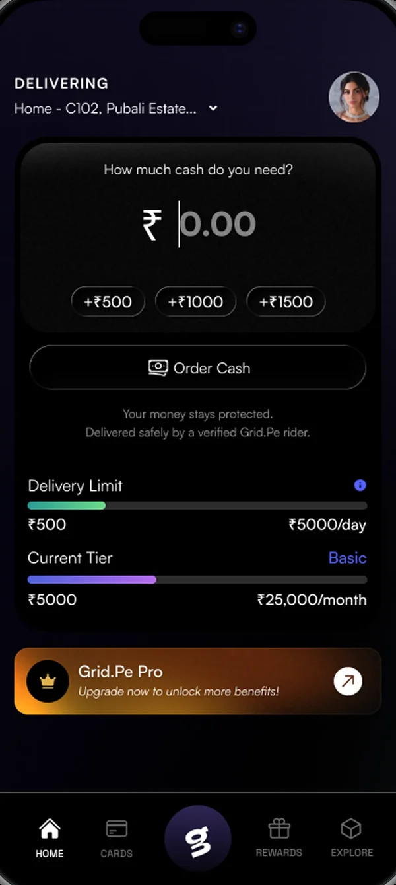
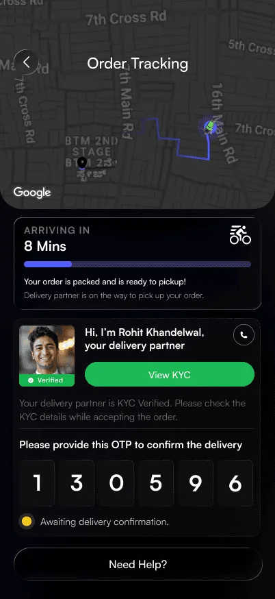
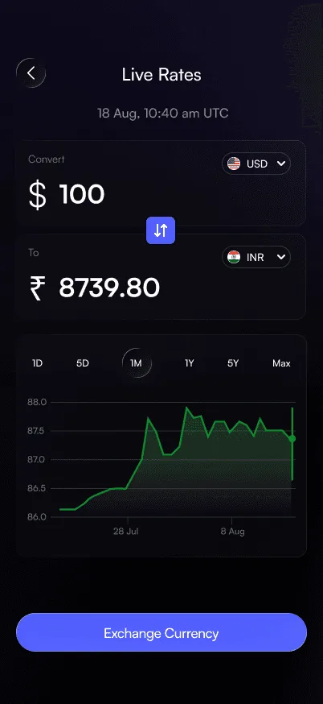

Keep the flow short
Request, pay, receive. There is no balance to fund first and no instrument to set up before the first order. The complexity in this business belongs in operations, not in the customer's five taps.
Home screenCompany case study · Grid.Pe · 2026
Grid.Pe is building an on-demand service for doorstep access to physical cash.
Start readingMost of a payment has been rebuilt for a phone. The step that still ends with a person standing in front of a machine is the one where you need notes in your hand.
An ATM is a fixed point with a cash tray that can empty. Out of service, out of notes, or out of the way: each one ends the same trip.
Time, a queue, fuel or a fare, and the trip back. That cost rarely appears on a statement, but it is still part of getting cash.
The plumber, the house help, the vegetable cart. Where the person being paid takes cash, the person paying needs cash.
A shopkeeper minding a counter, someone at home with no one to cover for them. Most cash-access options assume you are free to travel.
This is not everyone's problem, and we do not claim it is. Plenty of people live near a working ATM and have no reason to want anything else. The problem we are testing is narrower: there are specific situations where the physical trip is inconvenient, costly or impractical, and we do not yet know how many people are in them, or how often.
That is the idea, and it is a hypothesis rather than a finding. Not a bet against digital payments, and not a claim that cash is coming back: a hypothesis that the last mile of cash is primarily a logistics problem, and that logistics problems can be solved by moving the trip to someone whose job it is. Whether that holds at a price people will pay is exactly what remains untested.
Doorstep cash is not a new idea. It is an idea that needs four ordinary things to exist at the same time.
Digital KYC means both ends of a handover can be checked before anyone knocks on a door. Without it, doorstep cash is a stranger with an envelope.
A customer can pay for a physical service upfront, through a licensed processor, and be refunded through the same route when it fails.
Food, groceries, medicine, documents. Ordering a physical thing to a door is already familiar, so the interaction needs no explaining.
Digital payments changed how people move money. Getting hold of notes still requires a physical step, and some payments still end in them.
These conditions make the model possible to test. They are not evidence that people will use it, or that the economics will work.
Screens from the Grid.Pe app as implemented. The request, the limits, the live delivery and the OTP that closes it are all built. Everything after this section is about whether the business around them works.



Some screens in the app still carry wording from an earlier build. Those are not published here, and that copy is being brought back in line with the model described on this page.
Five steps, and none of them are clever. Step through them to see who is doing what at each point.
Enter the figure you need and set the address. The delivery fee, the platform fee and GST on those two are shown before you confirm. GST does not apply to the cash itself, and the fee is not taken out of it.
Nothing has moved yetPayment is taken at checkout and processed by an independent, RBI-licensed payment aggregator. Grid.Pe is not a bank and is not a payment instrument issuer; it does not hold your money at any point in this flow.
Handled by the licensed processorGrid.Pe routes the order to a KYC-verified delivery partner who collects the notes for it. This is the step Grid.Pe is being paid for, and the step the rest of this page argues is the hard one.
Grid.Pe's actual work starts hereYou follow the partner on the live map, with their photo, name and KYC status visible before they reach your door. Under the Terms, checking that identity before the handover is the customer's step.
In transitThe handover completes only when you read out the app's six-digit OTP. Under the Terms, that is the one thing that marks an order fulfilled: not the rider saying so, and not us.
Order fulfilledGrid.Pe is a technology and logistics platform. Under its current Terms it is not a bank, not a payment instrument issuer and not a custodian: it does not hold customer money, take deposits, or keep funds in escrow. The payment processor being licensed is not a regulatory approval of Grid.Pe, and we do not present it as one.
An early company is mostly a list of open questions. This is ours, sorted as honestly as we can sort it.
Built means implemented in the product, not proven in operation.
Nothing here has been proven in the field. The product runs end to end, but the business behind it has not started reporting results, so this page makes no claim about deliveries completed, cities served or customers acquired. When there are numbers worth publishing, they will appear here.
Grid.Pe is a sole proprietorship with a small team.
Anyone who has run operations asks the same thing within thirty seconds: the customer has already paid, so what makes the delivery trustworthy? Here is what the model relies on, and then the list of things it does not solve on its own.
Open problems, not solved ones. None of these is claimed to be handled today.
These are not solved. They are the reason the model is hard, and they are the work.
Revenue comes from the service, not from the cash. The primary line is the per-order fee; the Terms also describe a membership tier and a stated margin on currency exchange.
The honest version of this section is a unit-economics table, and we are not going to invent one. Contribution per delivery, cost per failed run, working capital per active city, repeat rate, orders per partner-hour and the price the market accepts are the numbers that decide whether this works. We will publish them when we have earned them.
The structural question is easy to state and hard to answer: can the fee on one delivery cover the cost of moving physical cash to one door, including the deliveries that fail, often enough to be a business. Membership revenue changes the shape of that question without removing it.
Cash access in India is not an empty field, and the ATM is not the only thing in it. These are the routes people already have. We describe them at a conceptual level, because we have not done the primary research that would let us make operational claims about any of them.
The default. You travel to a machine; the machine has to be working and stocked. Mature, widely deployed, and usually free at the point of use within your bank's limits.
You travel, during banking hours, and can generally get larger amounts and specific denominations than a machine will give you.
Agent-assisted cash-out, often closer to the customer than a branch. An established rail with its own agent network and its own limits.
Agent-operated terminals that turn a local shop or kiosk into a withdrawal point. You still travel, but usually less far.
Getting notes at a shop counter alongside or instead of a purchase. Informal in practice, and dependent on that merchant having cash.
Banks and India Post Payments Bank offer doorstep cash services, with their own eligibility rules, coverage and scheduling. The closest existing analogue to what Grid.Pe is testing.
| Dimension | ATM | Grid.Pe |
|---|---|---|
| Where it happens | At the machine | At your door |
| Who travels | You do | A delivery partner does |
| Cost at the point of use | Usually free, within your bank's limits | A fee, shown before you confirm |
| What the user needs | A card, and a way to get there | The app, KYC, and an online payment method |
| Availability depends on | The machine having cash and power | Cash being available nearby and a partner being free |
| Certainty before you commit | You find out when you arrive | You find out before you order |
| Typical use case | Routine withdrawal when getting there is easy | When the trip itself is the problem |
| Maturity | Decades of infrastructure | Early, and unproven in operation |
For someone who can easily reach a working ATM, the existing option may be perfectly adequate, and we are not arguing otherwise. Grid.Pe only needs to be useful when the physical trip itself becomes the problem. How often that is true, and for whom, is the thing we are trying to find out.
UPI made account-to-account payments work. It was not built to put notes in a hand, and it does not try to. The two end in different places, which is the only reason there is anything here to work on.
Ends as digital money.
Ends as paper. That last line is the whole company.
We are not predicting that cash grows or that UPI slows down, and this does not depend on either. The position is coexistence: for as long as some payments end in notes, there is a question about how those notes are obtained. Whether that question is worth a company is the open part.
Paying upfront for cash you have not received yet creates a trust problem. Most of the product decisions are about where that problem sits and what reduces it. These are choices, not findings: none of them has been tested against users at scale.
Request, pay, receive. There is no balance to fund first and no instrument to set up before the first order. The complexity in this business belongs in operations, not in the customer's five taps.
Home screenFees and GST are charged on the service rather than deducted from the amount delivered. Order two thousand, receive two thousand. The alternative turns every order into a conversation at the door.
Request screen · ReceiptDaily and monthly limits, and the tier they come from, sit on the home screen under the amount field. A limit discovered at checkout reads as a rejection; a limit shown upfront reads as a rule.
Home screenThe partner's photo, name and KYC status appear while they are still on the map. The Terms make checking that the customer's step, so the app puts it where there is still time to act on it.
Tracking screenSix digits, read out by the person receiving the cash. An order is fulfilled when they say so, which puts the final word with the only party who can see the notes.
Tracking screenCancellation is free within thirty seconds, or until a partner is assigned, whichever comes first. The window closes when a real person starts spending real time, and not before.
Order confirmationThe question underneath cash delivery is why the physical side of finance — notes, documents, verification, anything that has to be carried or handed over — still assumes you will come to a branch, a counter or a machine.
If verified physical handovers can become routine, transparent and easy to orchestrate, the same infrastructure could eventually support more than cash. That is a possible direction, not a plan we are announcing.
Cash is the first problem we are trying to solve, and the one that has to work first.
The most useful thing you can do for an early company is attack the weakest part of its thesis. If you have run cash operations, priced last-mile delivery, worked on agent networks or payments compliance, or watched a model like this fail before, we would rather hear it now than later.
Written by the Grid.Pe team. Everything here is either built, or stated as a hypothesis we are still testing.